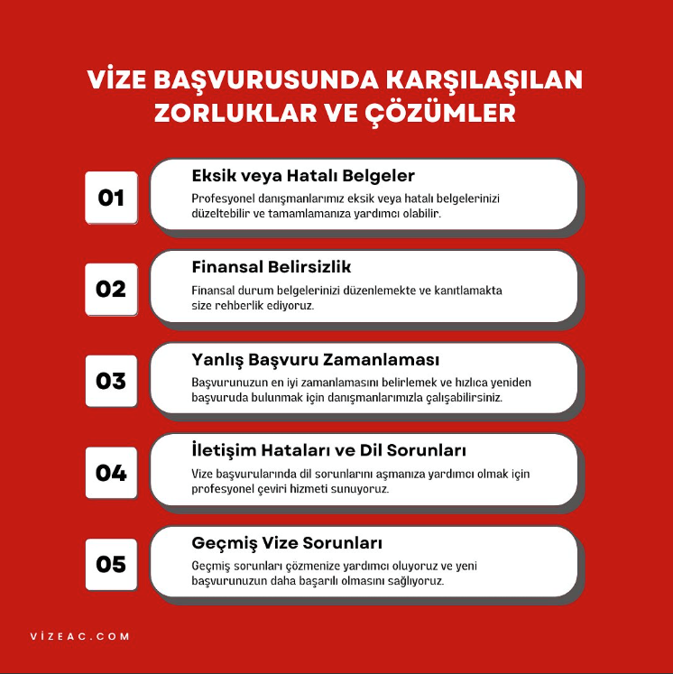
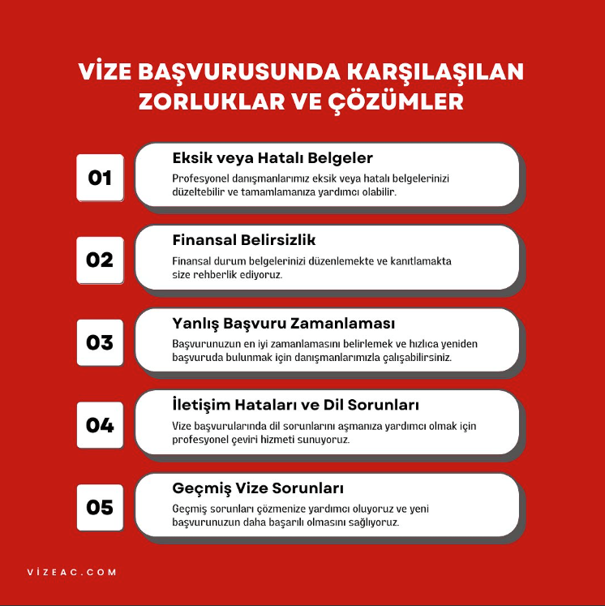

Turizm

• Kanada ile ABD sınırında yer alan bu doğa harikası, üç büyük şelaleden oluşur: Atnalı Şelalesi (Horseshoe Falls), Amerikan Şelalesi (American Falls) ve Gelin Duvağı Şelalesi (Bridal Veil Falls).
• Konum: Ontario (Kanada tarafı) ve New York (ABD tarafı) eyaletleri sınırı.
• Özellikler: Atnalı Şelalesi, üç şelale arasında en büyüğü ve en görkemlisidir. Kanada tarafından tam bir hilal şeklinde en iyi şekilde izlenir.
• Aktiviteler: Şelalelerin döküldüğü noktaya kadar giden Hornblower Niagara Cruises (eski adıyla Maid of the Mist) tekne turları, şelaleleri tepeden izlemek için Skylon Kulesi ve şelalelerin arkasından manzarayı deneyimleme imkanı sunan Journey Behind the Falls en popüler aktivitelerdendir.
• Önem: Şelaleler, bölgenin enerji ihtiyacının bir kısmını karşılayan hidroelektrik santralleri için de hayati öneme sahiptir.
• Kanada'nın en eski ulusal parkı (1885) olan Banff, UNESCO Dünya Mirası Listesi'nde yer alan, Kanada Kayalık Dağları'nın kalbinde bulunan bir doğa cennetidir.
• Konum: Alberta Eyaleti.
• Özellikler: Buzul sularıyla beslenen, eşsiz turkuaz renge sahip gölleri (özellikle Moraine Gölü ve Lake Louise), heybetli dağ zirveleri, geniş ormanları ve zengin vahşi yaşamı (ayılar, geyikler vb.) ile ünlüdür.
• Aktiviteler: Yazın yürüyüş, kışın kayak ve snowboard gibi sporlar için idealdir. Banff Gondola ile Sulphur Dağı'nın zirvesinden panoramik manzarayı izleyebilir veya Bow Valley boyunca kamp yapabilirsiniz. Moraine Gölü çevresindeki On Zirve Vadisi (Valley of the Ten Peaks) bölgenin en çok fotoğraflanan noktasıdır.
Toronto silüetinin en belirgin simgesi ve modern mühendisliğin bir harikası olan CN Kulesi, bir zamanlar dünyanın en yüksek kulesi unvanına sahipti.
• Konum: Toronto, Ontario
• Yükseklik: 553 metre
• Özellikler: Kule, ilk olarak iletişim (radyo ve televizyon) yayınlarının iletilmesi amacıyla inşa edilmiştir. Şehrin her yerinden görülebilen bir simgedir.
• Aktiviteler: Gözlem Katları (LookOut ve Glass Floor): Şehrin ve Ontario Gölü'nün 360 derecelik panoramik manzarasını sunan katlardır. Özellikle cam zemin (Glass Floor), ziyaretçilerin ayaklarının altında 346 metrelik boşluğu hissetmelerini sağlar.
• 360 Dönen Restoran: Yerden 351 metre yükseklikte bulunan, yavaşça dönerek yemek yerken Toronto'nun manzarasını izleme imkanı sunan lüks bir restorandır.
• EdgeWalk: Macera arayanlar için kulenin ana bölmesinin dış kenarında, 356 metre yükseklikte yürüyüş yapma deneyimidir.

Kuzey Amerika'da Meksika'nın kuzeyinde halen surlarla çevrili olan tek şehir unvanına sahip olan Eski Quebec, adeta bir Avrupa şehrini andıran tarihi dokusuyla ünlüdür. 1985 yılından beri UNESCO Dünya Kültür Mirası Listesi'nde yer almaktadır.
• Konum: Quebec Eyaleti'nin başkenti
• Özellikler: Şehir, tarihi surlarla çevrilidir ve iki ana bölüme ayrılır: Yukarı Şehir (Haute-Ville) ve Aşağı Şehir (Basse-Ville). Arnavut kaldırımlı sokakları, taş binaları ve Fransız kültürü etkisindeki atmosferiyle dikkat çeker.
• Simge Yapı: Şehrin silüetine hakim olan ve dünyanın en çok fotoğraflanan otellerinden biri olarak bilinen görkemli Fairmont Le Château Frontenac Oteli'dir.
• Aktiviteler: Aşağı Şehir'de yer alan ve şehrin en eski ticaret caddesi olan şirin Quartier Petit Champlain bölgesini gezmek, Dufferin Terası'ndan St. Lawrence Nehri manzarasını izlemek ve 4.5 km uzunluğundaki tarihi surların üzerinde yürüyüş yapmak başlıca aktivitelerdendir.

Stanley Park, Vancouver şehir merkezinin hemen yanı başında, 405 hektarlık devasa bir alana yayılan, ormanlık bir yarımadadır ve şehir sakinleri ile turistler için bir nefes alma merkezidir. Park, 1888 yılında açılmıştır ve adını Kanada'nın o dönemki Genel Valisi Lord Stanley'den almıştır.
• Konum: British Columbia eyaletinin Vancouver şehrinde, şehir merkezinin hemen yanı başında yer alan bir yarımada.
• Özellikler: 405 hektarlık devasa bir alana yayılmıştır. Parkın büyük bir kısmı, Batı Kırmızı Sedir ve Douglas Göknarı ağaçlarıyla dolu, korunmuş doğal yağmur ormanı alanıdır.
• Aktiviteler: Seawall (Deniz Duvarı): Parkı çevreleyen 9 kilometrelik popüler yürüyüş ve bisiklet yolu boyunca okyanus ve dağ manzarası eşliğinde gezinti yapmak. (Bisikletler saat yönünün tersine gitmelidir.)
• Totem Dirsekleri: Parkın en çok ziyaret edilen noktalarından biri olan Brockton Point'te, Yerli Halklar'ın (First Nations) sanatını sergileyen görkemli Totem Direkleri'ni görmek.
• Prospect Point: Lions Gate Köprüsü ve North Shore Dağları'nın panoramik manzarasını izlemek.
• Önem: Kuzey Amerika'nın en büyük ve en güzel şehir parklarından biri olarak kabul edilir ve Vancouver'ın "yeşil akciğeri" rolünü üstlenir.
• Ek Bilgiler: Parkın içinde, Kanada'nın en büyük akvaryumlarından biri olan Vancouver Akvaryumu yer alır.

Icefields Parkway (93 numaralı otoyol), Banff Ulusal Parkı'nı Jasper Ulusal Parkı'na bağlayan ve Kanada Kayalık Dağları'nın en görkemli manzaralarını sunan 232 kilometrelik bir rotadır.
• Konum: Alberta eyaleti, Banff Ulusal Parkı ile Jasper Ulusal Parkı'nı birbirine bağlayan 232 kilometrelik manzaralı otoyol (93 numaralı yol).
• Özellikler: Buzul gölleri, karlı zirveler, şelaleler ve geniş buzul tarlalarının bulunduğu bir rotadır. Yol boyunca sıkça yabani hayvanlarla karşılaşılabilir.
• Aktiviteler: Athabasca Buzulu: Ice Explorers adı verilen özel otobüslerle bu devasa buzulun üzerine çıkmak.
• Columbia Icefield Skywalk: Sunwapta Vadisi'nin üzerine inşa edilmiş cam zeminli gözlem platformundan manzarayı deneyimlemek.
• Sunwapta ve Athabasca Şelaleleri: Güçlü akıntıları ve derin kanyonları ile ünlü, kolayca erişilebilir noktalardır.
• Peyto Gölü Tilki kafasına benzeyen şekli ve parlak turkuaz rengiyle ünlü olan bu buzul gölünün manzarasını seyretmek.
• Önem: Dünyanın en güzel manzaralı sürüş rotalarından biri olarak kabul edilir ve UNESCO Dünya Mirası Alanı olan Kanada Kayalık Dağları'nın çekirdeğini oluşturur.
• Ek Bilgiler: Rota üzerindeki hizmet noktaları (benzin ve yiyecek) oldukça sınırlıdır. Kış aylarında zorlu hava şartları nedeniyle özel kış lastikleri zorunludur.
Kanada: Turizm Verileri
Kanada Turizm Verileri (Son Yıl: 2025)
| Kategori | Veri (2025) | Açıklama |
|---|---|---|
| Toplam Turizm Geliri (CAD) | $124.4 Milyar | Yerel ve uluslararası harcamalar dahil toplam gelir. |
| Uluslararası Ziyaretçi Harcaması | $28.9 Milyar | Pandemi öncesi rekoru aşan uluslararası harcama. |
| Uluslararası Ziyaretçi Sayısı | 27.2 Milyon Gezi | Kanadalı olmayan ziyaretçilerin toplam gezi sayısı. |
| Başlıca Ziyaretçi Pazarı | Amerika Birleşik Devletleri | En büyük ziyaretçi kaynağı. |
| En Çok Ziyaret Edilen Eyalet | Ontario | Uluslararası ve yerel ziyaretçilerin en çok tercih ettiği bölge. |
Tarihi Eserler Ve Unesco Dünya Mirası

Kanada'nın başkenti Ottawa'da, Ottawa Nehri'ne bakan bir tepede yer alan, Kanada federal hükümetinin ve ulusal yasama organının (Parlamento) bulunduğu görkemli yapılar kompleksidir.
• Mimari ve Rolü: Büyük ölçüde 19. yüzyılda inşa edilen yapılar, Gotik Yeniden Doğuş (Gothic Revival) mimarisinin çarpıcı örnekleridir. Ülkenin siyasi ve sembolik kalbidir. Her yıl milyonlarca turisti çeken, resmi törenlere ve etkinliklere ev sahipliği yapan önemli bir ulusal simgedir.
Ottawa'yı Kingston'a bağlayan, yapımı 1832'de tamamlanmış tarihi bir kanal sistemidir. Kanada'nın İngiliz-Amerikan Savaşı sonrası savunma amaçlı inşa ettiği önemli bir mühendislik eseridir.
• Önemi: UNESCO Dünya Mirası Alanı olarak kabul edilir ve Kuzey Amerika'da orijinal rotasında ve işlevselliğiyle kesintisiz olarak kullanılan en eski kanal sistemidir. Kış aylarında, kanalın Ottawa kısmı dünyanın en büyük doğal buz pateni pisti olan Skateway'e dönüşür.

Newfoundland ve Labrador eyaletinde bulunan bu arkeolojik alan, Avrupa kökenli bir yerleşimin Kuzey Amerika'daki bilinen en eski kanıtıdır.
• Tarihi Önemi: Yapılan araştırmalar, buradaki yerleşimin MS 1000 yılına, yani Kristof Kolomb'dan yaklaşık 500 yıl öncesine ait olduğunu göstermiştir. Bu, Vikinglerin (İskandinavların) Amerika kıtasına ilk ayak basan Avrupalılar olduğunu kanıtlayan kesin bir bulgudur. Bu nedenle burası da bir UNESCO Dünya Mirası Alanı'dır.
Müzeler
Alberta eyaletindeki Drumheller'da bulunan ve doğrudan bir tarihi eser olmaktan çok, dünyanın en zengin fosil koleksiyonlarından birine sahip bir doğa tarihi müzesidir.
• Önemi: Müze, özellikle Dinozorlar Çağı'na ait fosil ve iskeletleriyle ünlüdür. Alberta'nın Dinozor Eyalet Parkı (Dinosaur Provincial Park - UNESCO) bölgesinden çıkarılan, tarihi ve bilimsel açıdan paha biçilmez buluntulara ev sahipliği yaparak Kanada'nın Paleontoloji alanındaki yerini vurgular. Bu müze, dünyaca ünlü fosil yatağı olan Alberta'daki Horseshoe Canyon (At Nalı Kanyonu) ve Badlands (Kötü Topraklar) bölgesinin kalbinde yer alır. Coğrafi konumu sayesinde müze, sergilenen eserlerin (özellikle dinozor iskeletleri) çıkarıldığı alanlara oldukça yakındır.
Kanada'nın en çok ziyaret edilen müzesidir ve Ottawa Nehri'nin karşısında, Gatineau, Québec'te yer alır. Odak noktası, ülkenin insanlık tarihi, kültürel çeşitliliği ve medeniyet mirasıdır. Özellikle Yerli Halklar (First Peoples) koleksiyonuna adanmış görkemli galerileriyle ve çarpıcı modern mimarisiyle ünlüdür.
• Konum: Gatineau, Québec (Ottawa nehrinin hemen karşısında).
• Odak Alanı: Kanada'nın insanlık tarihi ve kültürel çeşitliliğine odaklanır. Ülkenin en çok ziyaret edilen müzesidir.
• Öne Çıkanlar: Özellikle Yerli Halklar (First Peoples) kültürüne adanmış galerileri ve Kanada tarihini kronolojik olarak anlatan büyük salonu ile ünlüdür.

Royal Ontario Müzesi (ROM), Toronto, Ontario'da yer alan ve Kanada'nın en büyük müzesi olan önemli bir kültür ve araştırma kurumudur. Müze, hem doğal tarih (dinozorlar, mineraller) hem de dünya kültürleri (Antik Mısır, Doğu Asya sanatı) üzerine geniş ve çeşitli koleksiyonlarıyla ünlüdür. Şehrin önde gelen kültürel simgelerinden biridir.
• Konum: Toronto, Ontario.
• Odak Alanı: Doğal tarih ve dünya kültürleri. Kanada'nın en büyük müzesidir.
• Öne Çıkanlar: Dinozor iskeletleri, eski Mısır eserleri, Doğu Asya sanatı ve geniş doğal bilimler koleksiyonları ile tanınır.
Doğal Güzellikler

Göl, çevresindeki Victoria Buzulu'ndan eriyen suların taşıdığı ince mineraller (kaya unu) sayesinde yıl boyunca kendine has parlak turkuaz rengiyle ünlüdür. Karla kaplı dağlarla çevrili bu göl, Kanada'nın en çok fotoğrafı çekilen doğal simgelerinden biridir ve kıyısında tarihi Fairmont Chateau Lake Louise oteli bulunur.
• Detay: Alberta'daki Banff Ulusal Parkı içinde yer alan bu buzul gölü, kendine özgü turkuaz rengini, çevresindeki buzulların erimesiyle suya karışan "kaya unu" adı verilen ince minerallerden alır.
• Aktiviteler: Yaz aylarında kanoyla gezinti yapmak, göl kenarındaki tarihi Fairmont Chateau Lake Louise otelini ziyaret etmek ve gölü çevreleyen patikalarda (örneğin Plain of Six Glaciers çay evine giden rota) yürüyüş yapmak popülerdir.
• Sembolik Değer: Kanada Kayalık Dağları'nın ve kartpostalların en tanınan simgelerinden biridir.

Jasper Ulusal Parkı, Kanada'nın Alberta eyaletindeki Kanada Kayalık Dağları'nda yer alan ve UNESCO Dünya Mirası Alanı statüsüne sahip devasa bir doğa koruma bölgesidir.
• Detay: Kanada Kayalık Dağları'ndaki parklar zincirinin en büyüğüdür ve UNESCO Dünya Mirası Alanı'dır. Banff'ın kuzeyinde yer alır. Daha az kalabalık ve daha vahşi bir deneyim sunar.
• Öne Çıkanlar: Maligne Gölü ve Kanyonu: Göl, kışın donan ve altında bir yeraltı nehri akışı olan gizemli bir göldür. Kanyon ise yazın ve kışın nefes kesici manzaralar sunar.
Athabasca Şelalesi: Büyük bir güçle dar bir kanyondan dökülen şelaledir.
• Vahşi Yaşam: Park, büyük boynuzlu koyunlar, geyikler, ayılar ve dağ keçileri gibi zengin vahşi yaşam popülasyonlarına ev sahipliği yapar.

Fundy Körfezi, Kanada'nın New Brunswick ve Nova Scotia eyaletleri arasında yer alır ve dünyanın en yüksek gelgit aralığına sahip olmasıyla uluslararası üne sahiptir.
• Detay: New Brunswick ve Nova Scotia eyaletleri arasında yer alan bu körfez, dünyanın en yüksek gelgit aralığına sahip olmasıyla ünlüdür.
• Fenomen: Gelgit sırasında su seviyesi, bazı bölgelerde 16 metreyi (4-5 katlı bir bina yüksekliği) aşarak birkaç saat içinde inanılmaz bir kıyı şeridi değişimi yaratır.
• Aktiviteler: Hopewell Kayaları (Flowerpot Rocks): Gelgit çekildiğinde, çiçek saksısına benzeyen bu eşsiz kaya oluşumlarının etrafında yürüyebilirsiniz. Gelgit sırasında yükselen suda yapılan tekne turları ve deniz kenarında yürüyüşler.
| Kategori | Açıklama |
|---|---|
| Vize Zorunluluğu | Türkiye Cumhuriyeti vatandaşları için (Pasaport türü fark etmeksizin) zorunludur. |
| Vize Türü | Kısa süreli turistik, ticari veya ziyaret amaçlı seyahatler için genellikle Ziyaretçi Vizesi (Temporary Resident Visa - TRV) gereklidir. |
| eTA Durumu | Türk vatandaşları, vize muafiyeti sağlayan Elektronik Seyahat İzni (eTA) uygulamasından yararlanamaz. |
| Başvuru Yöntemi | Çoğunlukla online (IRCC portalı) üzerinden başlatılır ve yetkili Vize Başvuru Merkezlerinde biyometrik işlemlerle tamamlanır. |
| Temel Şartlar | Kanada'dan ayrılma niyetini ve seyahat masraflarını karşılayacak finansal yeterliliği kanıtlama zorunluluğu. |
| Ortalama İşlem Süresi | Dönemsel yoğunluğa göre değişmekle birlikte, ortalama 6 ila 8 hafta sürebilmektedir. |
| Başvuru Ücreti (Temel) | Vize ücreti yaklaşık 100 CAD (Kanada Doları) olup, buna biyometrik ücreti eklenir. |
 

✈️ Kanada Ulaşım Bilgileri
| Ulaşım Türü | Açıklama | Önemli Merkezler / Notlar |
|---|---|---|
| Havayolu (Uluslararası/Yurtiçi) | Kanada'nın uzun mesafeleri için en hızlı ulaşım şeklidir. | Ana Hublar: Toronto (YYZ), Vancouver (YVR), Montréal (YUL). Yurtiçinde Air Canada ve WestJet kullanılır. |
| Demiryolu (VIA Rail) | Şehirlerarası seyahatler ve turistik, manzaralı uzun yolculuklar (Örn: The Canadian rotası) için kullanılır. | Otobüs ve uçuştan daha yavaş ancak daha konforlu ve manzaralıdır. |
| Karayolu (Araba Kiralama) | Rocky Dağları ve kırsal alanlar gibi doğal güzellikleri keşfetmek için vazgeçilmezdir. | Uzun mesafeler ve değişken yol şartları (özellikle kışın) dikkate alınmalıdır. |
| Şehiriçi Toplu Taşıma | Büyük şehirlerde (Toronto, Vancouver, Montréal) gelişmiş metro, otobüs ve tramvay ağları mevcuttur. | Şehir merkezlerinde araç kullanmaya pratik ve hızlı bir alternatiftir. |

📅 Kanada Seyahat Planlaması (En İdeal Ziyaret Zamanı)
| Mevsim / Dönem | Aylar | Önerilen Aktiviteler / Bölgeler |
|---|---|---|
| Yaz (Yüksek Sezon) | Haziran - Ağustos | Doğa Parkları (Banff, Jasper), Göller, Kanoyla Gezinti, Kıyı Şeridi Gezileri. |
| Sonbahar (En İdeal Kültürel Dönem) | Eylül - Ekim | Québec ve Ontario'da Yaprak Dökümü (Fall Foliage) manzaraları, şehir gezileri. |
| Bahar | Nisan - Mayıs | Büyük şehirler (Toronto, Vancouver) için gezmek, müzeleri ziyaret etmek. Doğanın yeni canlandığı dönem. |
| Kış | Kasım - Nisan | Kayak ve Kış Sporları (Rocky Dağları, Laurentian Dağları), Ottawa'da buz pateni. |